| История возникновения письменности http://www.senav.net/2008/07/03/istorija_vozniknovenija_pismennosti.html |
| В начале XXI столетия немыслимо представить современную
жизнь без книг, газет, указателей, потока информации. Появление письменности стало одним из
самых важных, фундаментальнейших открытий на долгом пути эволюции человечества. По значимости
этот шаг можно, пожалуй, сравнить с добыванием огня или с переходом к выращиванию растений
вместо долгой поры собирательства. Становление письменности - очень непростой процесс,
длившийся тысячелетия. Славянская письменность, наследницей которой является наше современное
письмо, встала в этот ряд уже более тысячи лет назад, в IX веке нашей эры.
Самый древний и самый простой способ письма появился, как считается, еще в палеолите - "рассказ в картинках", так называемое пиктографическое письмо (от латинского pictus - нарисованный и от греческого grapho - пишу). То есть "рисую-пишу" (пиктографическим письмом и в наше время еще пользуются некоторые американские индейцы). Письмо это конечно же очень несовершенное, ведь прочесть рассказ в картинках можно по-разному. Поэтому, кстати, пиктографию как форму письма далеко не все специалисты признают началом письменности. К тому же для древнейших людей любое подобное изображение было одушевленным. Так что "рассказ в картинках", с одной стороны, наследовал эти традиции, с другой - требовал известной абстрагированности от изображения |
| 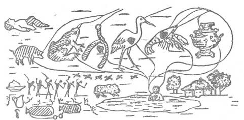 |
| В IV-III тысячелетиях до н. э. в Древнем Шумере (Передняя Азия), в Древнем Египте, а потом, во II, и в Древнем Китае возник другой способ письма: каждое слово передавалось рисунком, иногда конкретным, иногда условным. Например, когда речь шла о руке, рисовали кисть руки, а воду изображали волнистой линией. Так же определенным символом обозначали дом, город, лодку... Такие египетские рисунки греки назвали иероглифами: "иеро" - "священный", "глифы" - "высеченный на камне". Текст, составленный иероглифами, выглядит как серия рисунков. Это письмо можно назвать: "пишу понятие" или "пишу идею" (отсюда научное название такого письма - "идеографическое"). Однако сколько же приходилось помнить иероглифов! |
| 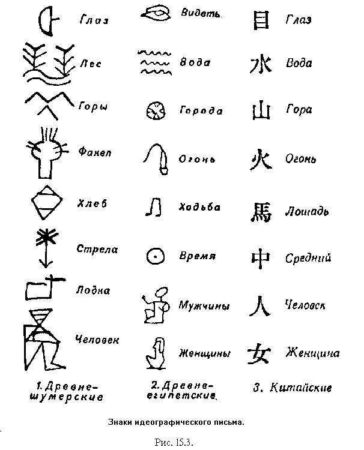 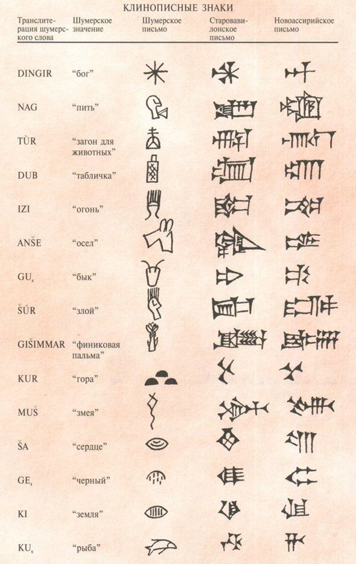 |
| Чрезвычайным достижением человеческой цивилизации стало так называемое слоговое письмо, изобретение которого происходило на протяжении III-II тысячелетий до н. э. Каждый этап становления письменности фиксировал определенный итог в продвижении человечества по пути логического абстрактного мышления. Сначала - это расчленение фразы на слова, затем - свободное пользование рисунками-словами, следующий шаг - расчленение слова на слоги. Мы ведь говорим слогами, и детей учат читать по слогам. Упорядочить запись слогами, казалось бы, что может быть естественнее! Да и слогов много меньше, чем составляемых с их помощью слов. Но чтобы придти к такому решению, понадобились многие столетия. Слоговым письмом пользовались уже в III-II тысячелетиях до н. э. в Восточном Средиземноморье. Например, преимущественно слоговым письмом является знаменитая клинопись. (Слоговым способом до сих пор пишут в Индии, в Эфиопии.) |
| 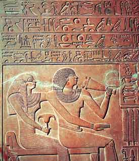 |
| Следующим этапом на пути упрощения письменности стало так называемое звуковое письмо, когда каждому звуку речи соответствует свой знак. Но додуматься до такого простого и естественного способа оказалось сложнее всего. Прежде всего надо было догадаться расчленить слово и слоги на отдельные звуки. Но когда такое наконец произошло, новый способ продемонстрировал несомненные преимущества. Нужно было запомнить лишь два-три десятка букв, а точность в воспроизведении речи на письме несопоставима ни с каким другим способом. Со временем именно буквенное письмо стало употребляться почти повсеместно. |
| 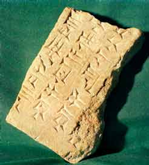 |
ПЕРВЫЕ АЛФАВИТЫНи одна из систем письма практически никогда не существовала в чистом виде и не существует даже сейчас. Например, большинству букв нашего алфавита, как а, б, в и другим, соответствует один определенный звук, но в буквах-знаках я, ю, ё - уже несколько звуков. Не можем мы обойтись и без элементов идеографического письма, скажем, в математике. Вместо того, чтобы писать словами "два прибавить два равняется четырем", мы, используя условные знаки, получаем очень краткую форму: 2+2=4. То же - в химических и физических формулах.Самые ранние алфавитные тексты были обнаружены в Библе (Ливан). |
| 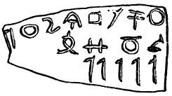 |
| Одними из первых буквенным звуковым письмом стали
пользоваться те народы, в языке которых гласные звуки оказались не столь важными, как
согласные. Так, в конце II тысячелетия до н. э. алфавит возник у финикийцев, древних евреев,
арамейцев. Например, в еврейском языке при добавлении к согласным К - Т - L разных гласных
получается семейство однокоренных слов: KeToL - убивать, KoTeL - убийца, KaTuL - убитый и т. п.
На слух всегда понятно, что речь идет об убийстве. Поэтому и в письме писали только согласные -
семантический же смысл слова был ясен из контекста. Кстати, древние евреи и финикийцы писали
строчки справа-налево, как если бы такое письмо придумали левши. Этот древнейший способ письма
сохраняется у евреев и поныне, таким же способом сегодня пишут все народы, использующие
арабский алфавит.
Один из первых алфавитов на Земле - финикийский. |
| 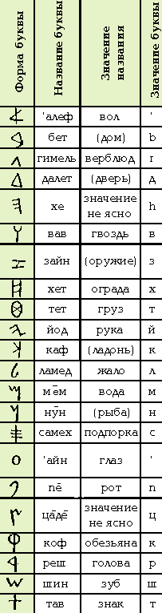 |
| От финикийцев - жителей восточного побережья
Средиземного моря, морских торговцев и путешественников - буквенно-звуковое письмо перешло к
грекам. От греков данный принцип письма проник в Европу. А от арамейского письма, как считают
исследователи, свое происхождение ведут почти все буквенно-звуковые письменные системы народов
Азии.
В алфавите финикийцев было 22 буквы. Они располагались в определенном порядке от `алеф, бет, гимель, далет ... до тав. Каждая буква имела осмысленное название: `алеф - вол, бет - дом, гимель - верблюд и так далее. Названия слов как бы рассказывают о создавшем алфавит народе, сообщая о нем самое главное: народ жил в домах (бет) с дверьми (далет), при постройке которых использовались гвозди (вав). Он занимался земледелием, используя силу волов (`алеф), скотоводством, рыбной ловлей (мем - вода, нун - рыба) или кочевал (гимель - верблюд). Он торговал (тeт - груз) и воевал (зайн - оружие). Исследователь, обративший внимание на это, замечает: среди 22 букв финикийского алфавита нет ни одной, название которой было бы связано с морем, кораблями или морской торговлей. Именно это обстоятельство натолкнуло его на мысль, что буквы первого алфавита созданы отнюдь не финикийцами, признанными мореходами, а, вероятнее всего, древними евреями, у которых финикийцы этот алфавит позаимствовали. Но как бы там ни было, порядок букв, начиная с `алеф, был задан. Греческое письмо, как уже говорилось, произошло от финикийского. В греческом алфавите букв, передающих все звуковые оттенки речи, стало больше. Но порядок их и названия, часто не имевшие в греческом языке уже никакого смысла, сохранились, хотя и в несколько измененном виде: альфа, бета, гамма, дельта… Сначала в древнегреческих памятниках буквы в надписях, как и в семитских языках, располагались справа-налево, и далее, не прерываясь, строчка "вилась" слева-направо и снова справа-налево. Прошло время, пока наконец установился вариант письма слева-направо, ныне распространившийся на большей части земного шара. |
| 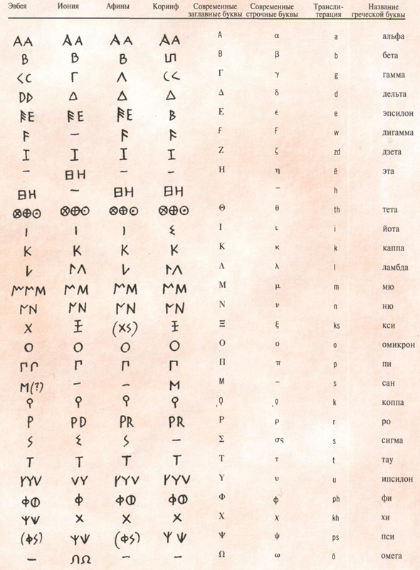 |
| Латинские буквы произошли из греческих, и алфавитный
порядок их принципиально не изменился. В начале I тысячелетия н. э. греческий и латинский языки
стали главными языками огромной Римской империи. Вся античная классика, к которой мы с трепетом
и уважением обращаемся и поныне, написана на этих языках. Греческий - это язык Платона, Гомера,
Софокла, Архимеда, Иоанна Златоуста... На латинском писали Цицерон, Овидий, Гораций, Вергилий,
блаженный Августин и другие.
А между тем еще до того, как в Европе распространилась латинская азбука, некоторые европейские варвары уже имели в том или ином виде свою письменность. Довольно самобытное письмо сложилось, например, у германских племен. Это так называемое "руническое" ("руна" в германском языке означает "тайна") письмо. Оно возникло не без влияния уже существовавшей письменности. Здесь тоже каждому звуку речи соответствует определенный знак, но эти знаки получили очень простое, стройное и строгое начертание - только из вертикальных и диагональных линий. |
| 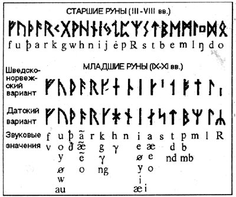 |
РОЖДЕНИЕ СЛАВЯНСКОЙ ПИСЬМЕННОСТИВ середине I тысячелетия н. э. славяне заселили огромные территории в Центральной, Южной и Восточной Европе. Их соседями на юге были Греция, Италия, Византия - своего рода культурные эталоны человеческой цивилизации.Древнейшие дошедшие до нас славянские письменные памятники выполнены двумя значительно различающимися азбуками – глаголицей и кириллицей. История их происхождения сложна и не ясна до конца. Название «глаголица» образовано от глаголъ – «слово», «речь». По алфавитному составу глаголица почти полностью совпадала с кириллицей, но резко отличалась от нее формой букв. Установлено, что по происхождению буквы глаголицы в большинстве своем связаны с греческим минускульным алфавитом, некоторые буквы составлены на основе самаритянского и древнееврейского письма. Существует предположение, что эта азбука была создана Константином Философом. Глаголица широко применялась в 60-х годах 9 века в Моравии, откуда проникла в Болгарию и Хорватию, где существовала до конца 18 века. Изредка употреблялась он и в Древней Руси. Глаголица хорошо отвечала фонемному составу старославянского языка. Кроме новоизобретенных букв в нее были включены соответствия греческим буквам, в том числе и такие, которые в принципе не были нужны для славянского языка. Этот факт говорит о том, что славянская азбука, по убеждению ее создателей, должна была вполне соответствовать греческой. |
| 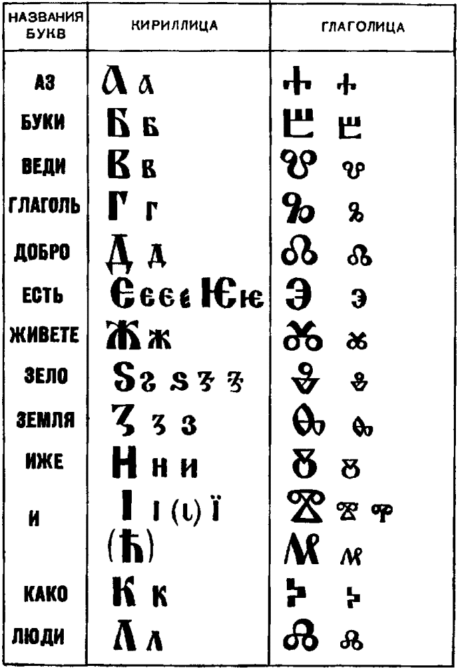 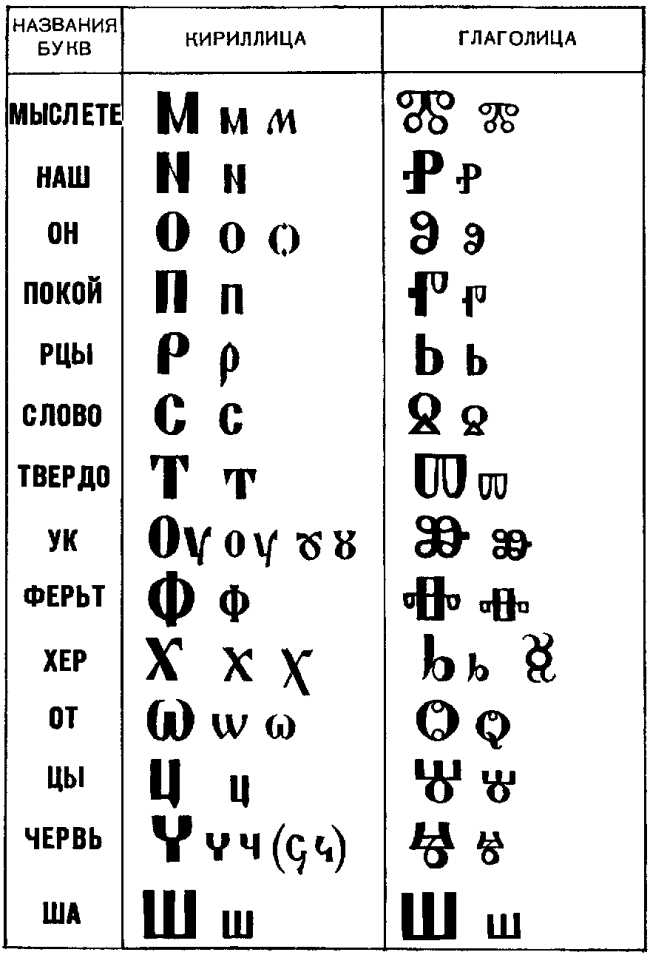 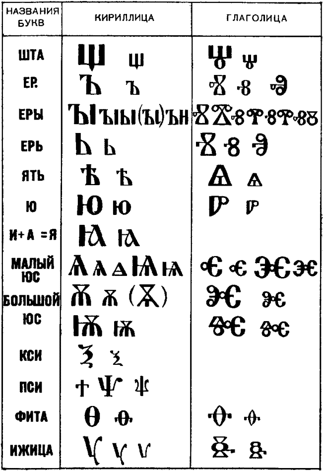 |
| По форме букв можно отметить два вида глаголицы. В
первой из них, так называемой болгарской глаголице, буквы округлые, а в хорватской, называемой
также иллирийской или далмацийской глаголицей, форма букв угловатая. Ни тот, ни другой вид
глаголицы не имеет резко очерченных границ распространения. В позднейшем развитии глаголица
переняла много знаков у кириллицы. Глаголица западных славян (чехов, поляков и других)
продержалась сравнительно недолго и была заменена латинским письмом, а остальные славяне
перешли позже на письмо кириллического типа. Но глаголица не исчезла совсем и до настоящего
времени. Так, она употребляется или, по крайней мере, употреблялась до начала второй мировой
войны в кроатских поселениях Италии. Глаголическим шрифтом даже печатались газеты.
Название другой славянской азбуки – кириллицы – произошло от имени славянского просветителя 9
века Константина (Кирилла) Философа. Существует предположение, что именно он является ее
создателем, однако точных данных о происхождении кириллицы нет.
В алфавите кириллицы насчитывается 43 буквы. Из них 24 заимствованы из византийского уставного письма, остальные 19 изобретены заново, но в графическом оформлении уподоблены первым. Не все заимствованные буквы сохранили обозначение того же звука, что и в греческом языке, — некоторые получили новые значения в соответствии с особенностями славянской фонетики. На Руси кириллица была введена в 10-11 веках в связи с христианизацией. Из славянских народов кириллицу дольше всех сохранили болгары, но в настоящее время их письмо, как и письмо сербов, одинаково с русским, за исключением некоторых знаков, предназначенных для обозначения фонетических особенностей. |
| 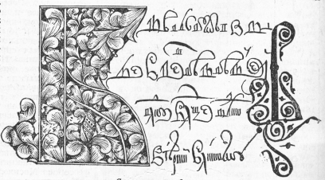 |
| Древнейшую форму кириллицы называют уставом.
Отличительной чертой устава является достаточная отчетливость и прямолинейность начертаний.
Большая часть букв угловатая, широкого тяжеловесного характера. Исключениями являются узкие
округлые буквы с миндалевидными изгибами (О, С, Э, Р и др.), среди других букв они кажутся как
бы сжатыми. Для этого письма характерны тонкие нижние удлинения некоторых букв (Р, У, 3). Эти
удлинения можно увидеть и в других видах кириллицы. Они выступают в общей картине письма
легкими декоративными элементами. Диакритические знаки еще не известны. Буквы устава – крупного
размера и стоят отдельно друг от друга. Старый устав не знает промежутков между словами.
Начиная с 13 столетия, развивается второй вид письма — полуустав, который впоследствии вытесняет устав. В связи с возросшей потребностью в книгах появляется как деловое письмо писцов, работавших на заказ и на продажу. Полуустав соединяет цели удобства и скорости письма, проще устава, имеет значительно больше сокращений, чаще бывает наклонным – к началу или к концу строки, лишён каллиграфической строгости. На Руси полуустав появляется в конце 14 века на основе русского устава; подобно ему – это прямой почерк (буквы вертикальные). Сохраняя последнее правописание устава и его начерки, придаёт им чрезвычайно простой и менее чёткий вид, так как размеренные ремесленные нажимы заменяются более свободным движением пера. Полуустав употреблялся в 14-18 веках наряду с другими видами письма, главным образом, со скорописью и вязью. |
| 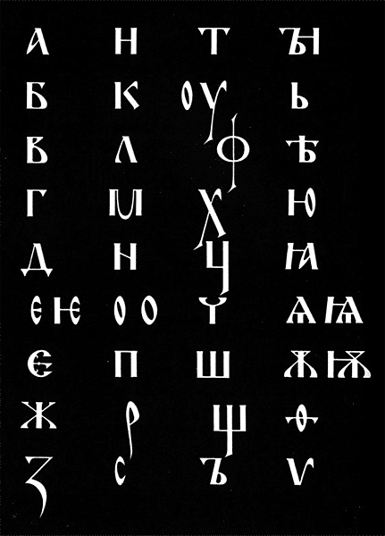 |
| В 15 столетии, при великом князе Московском Иване III,
когда закончилось объединение русских земель, Москва превращается не только в политический, но
и культурный центр страны. Прежде областная культура Москвы начинает приобретать характер
всероссийской. Наряду с увеличивающимися потребностями повседневной жизни возникла
необходимость в новом, упрощенном, более удобном стиле письма. Им стала скоропись.
Скоропись примерно соответствует понятию латинского курсива. У древних греков скоропись была в широком употреблении на ранней стадии развития письма, частично имелась она и у юго-западных славян. В России скоропись как самостоятельный вид письма возникла в 15 в. Буквы скорописи, частично связанные меж собой, отличаются от букв других видов письма своим светлым начертанием. Но так как буквы были снабжены множеством всевозможных значков, крючков и прибавок, то читать написанное было довольно трудно. Хотя в скорописи 15 века, в общем, еще отражается характер полуустава и связующих буквы штрихов мало, но в сравнении с полууставом это письмо более беглое. Буквы скорописи в значительной мере выполнялись с удлинениями. В начале знаки были составлены главным образом из прямых линий, как это характерно для устава и полуустава. Во второй половине 16 века, а особенно в начале 17 века, основными линиями письма становятся полукруглые штрихи, а в общей картине письма заметны некоторые элементы греческого курсива. Во второй половине 17 века, когда распространилось много разных вариантов письма, и в скорописи наблюдаются характерные для этого времени черты — меньше вязи и больше округлостей. Скоропись того времени постепенно освобождается от элементов греческого курсива и отдаляется от форм полуустава. В позднейшем периоде прямые и кривые линии приобретают равновесие, а буквы становятся более симметричными и округлыми. В начале 18 века в связи с укреплением русского национального государства, в условиях, когда церковь была подчинена светской власти, наука и просвещение приобретают особенно большое значение. А развитие этих областей просто немыслимо без развития книгопечатания. Поскольку в 17 веке печатались книги главным образом церковного содержания, издание книг светского содержания предстояло начинать почти сызнова. Большим событием было издание в 1708 году «Геометрии», которая в рукописном виде уже давно была известна в России. Создание новых по своему содержанию книг, требовало нового подхода к их изданию. Забота об удобочитаемости книги и простоте ее оформления характерна для всей издательской деятельности первой четверти 18 века. Одним из самых важных мероприятий была реформа в 1708 году кирилловского печатного полуустава и введение новых изданий гражданского шрифта. Из 650 наименований книг, изданных при Петре I, около 400 были напечатаны вновь введенным гражданским шрифтом. При Петре I в России была осуществлена реформа кириллицы, устранившая ряд ненужных для русского языка букв и упростившая начертания остальных. Так возникла русская «гражданка» («гражданская азбука» в противоположность «церковной»). В «гражданке» были узаконены некоторые буквы, не входившие в первоначальный состав кириллицы – «э», «я», позднее «й» и затем «```ё», а в 1918 году из русского алфавита были изъяты буквы «i», « » («ять»), «?» («фита») и «?» («ижица») и одновременно отменено употребление «твердого знака» на конце слов. Различным изменениям подверглось на протяжении веков и латинское письмо: были разграничены «i» и «j», «u» и «v», добавлялись отдельные буквы (разные для разных языков). Более существенное изменение, касавшееся всех современных систем, состояло в постепенном введении обязательного словораздела, а затем и знаков препинания, в функциональном разграничении (начиная с эпохи изобретения книгопечатания) прописных и строчных букв (впрочем, последнее разграничение отсутствует в некоторых современных системах, например в грузинском письме). |